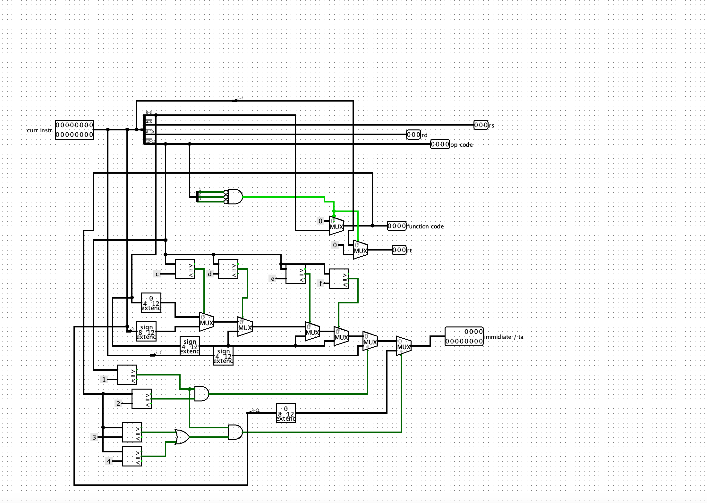
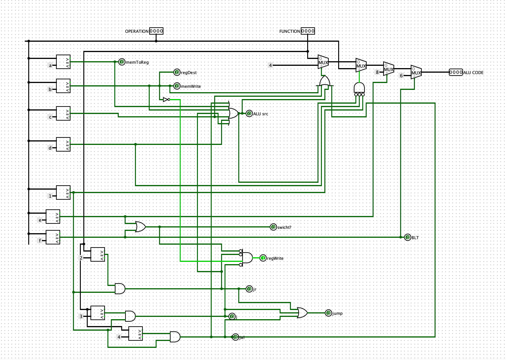
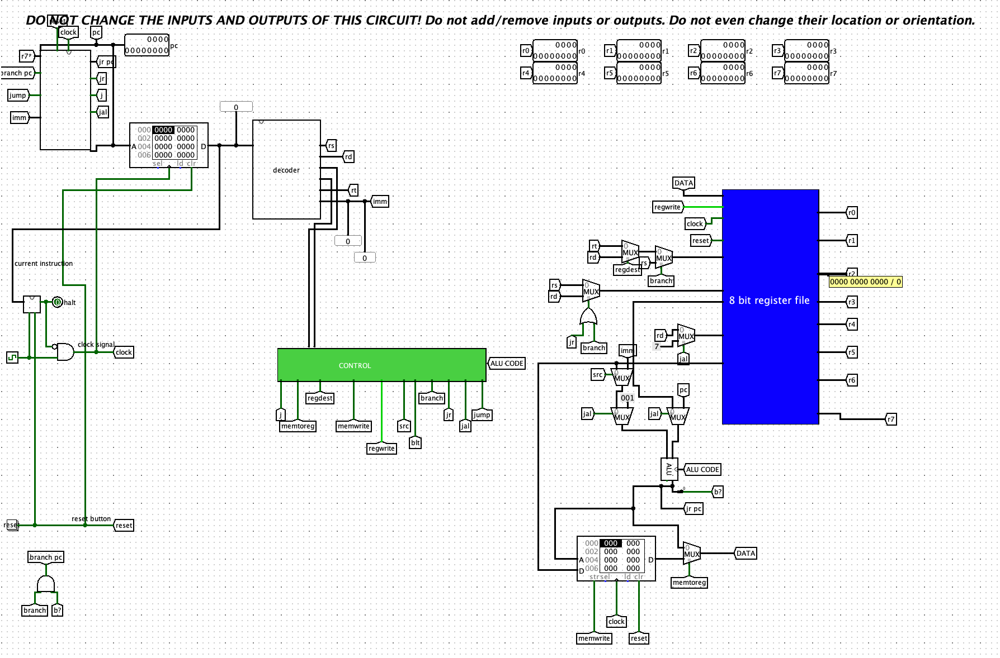

Dit verslag werd opgesteld door:
De oplossing bestaat uit de volgende bestanden (geef alle bestanden op):
Decoder
We beginnen met de Decoder, zoals afgebeeld in de onderstaande figuur. Hier wordt de 16-bit input gesplitst om de juiste data over te brengen. Je zult opmerken dat we veelvuldig gebruikmaken van comparators en multiplexers. Dit is om bepaalde "speciale" scenario's te behandelen waarbij een ander signaal moet worden doorgegeven. Een voorbeeld hiervan is de immediate waarde. Soms moesten we een 'signed extended' waarde doorgeven en soms niet. Dit probleem werd eenvoudig opgelost met multiplexers. We bepaalden of de waarde 'signed' of 'unsigned' moest zijn met behulp van comparators.

Control Unit
Onze Control Unit is voornamelijk samengesteld uit multiplexers en comparators. We moesten echter regelmatig een logische poort aanpassen, omdat het niet altijd toegestaan was om naar het geheugen te schrijven. De ALU-code is daarentegen vrij opmerkelijk. We konden de ALU namelijk vaak inzetten voor vergelijkingen, optellingen of voor 'kleiner dan'-operaties. Hiervoor was de ALU essentieel, omdat deze het correcte signaal moest ontvangen om te bepalen wat er precies moest gebeuren met de twee invoerwaarden. 
Full Datapth
In eindresultaat is op te merken dat we veelvuldig tunnels hebben gebruikt om verschillende redenen. Ten eerste zorgt dit voor een heldere lay-out, aangezien er minder kabels zijn en het snel duidelijk is wat de input van een bepaalde poort is. Dit draagt ook bij aan een betere structuur en overzichtelijkheid van het datapad. Zo vermijden we dat kabels per ongeluk met elkaar verbonden worden, wat kan leiden tot fouten die lastig op te sporen zijn. Het is tijd om alle componenten waaraan we gedurende dit semester hebben gewerkt, samen te voegen tot een functionele datapad. Hieronder is ons datapad weergegeven.

{kind=link}